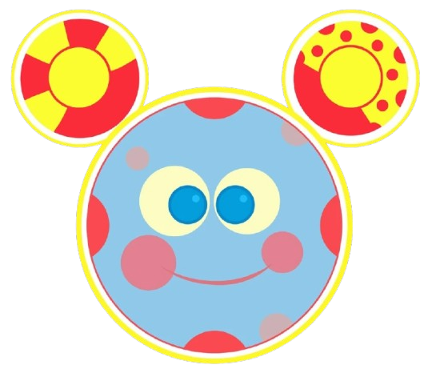

Emotion Detection
AUTO-ONLY (In Game)
Status: Waiting for game to start
-
Faces
-
Emotion
-
Confidence
-
FPS
Eye Tracking
AUTO-ONLY (In Game)
Eye: Waiting for game
Status: Waiting for game to start
-
Iris Conf
-
Direction
-
Eye Score
-
Alignment
AUTO-ACTIVATION SYSTEM
Start any game to begin monitoring.
×

I Need Your Attention!
I notice you might need some help. Let's take a moment before we continue!
Complete an option to continue
You must complete the intervention
to continue the game!
Speaking...